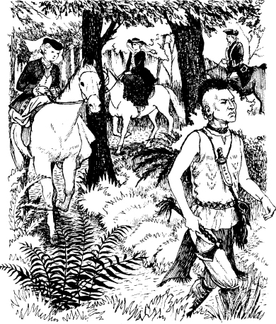

1
Hai chị em
Listen to Part 1:
Vào năm 1757. Câu chuyện diễn ra tại miền đất dữ tợn và hoang dã, phía tây sông Hudson. Đó là năm thứ ba của cuộc chiến tranh ở Bắc Mỹ. Cuộc chiến tranh giữa Anh và Pháp. Mỗi quốc gia đều muốn giành lấy vùng đất này.
Những bộ lạc người da đỏ luôn sống tại vùng đất đó. Trong chiến tranh, một số bộ lạc chiến đấu cho người Pháp. Một số bộ lạc khác thì chiến đấu cho người Anh.

Pháo đài Edward nằm trên sông Hudson. Tướng Webb là chỉ huy của đội quân Anh tại Pháo đài Edward. Ông đang chờ tin tức về Tướng Montcalm. Montcalm là chỉ huy của đội quân Pháp.
Tin tức đến vào một buổi sáng. Một người da đỏ tên Magua đã tới.
Magua nói với tướng Webb: 'Montcalm và quân đội Pháp đang tiến về Pháo đài William Henry'.
Pháo đài William Henry cách đó mười lăm dặm. Nó nằm ở đầu phía nam của Hồ Horican.
Webb hỏi: 'Montcalm có bao nhiêu người lính?'
Magua nói: 'Nhiều như những chiếc lá trên cây'. 'Tướng Munro muốn tăng thêm quân lính tại Pháo đài William Henry'.
Listen to Part 2:
Tướng Webb nói: 'Tôi sẽ gửi một nghìn năm trăm lính'.
Tướng Munro là chỉ huy của đội quân Anh tại Pháo đài William Henry. Ông có hai cô con gái – Cora và Alice. Cora khoảng hai mươi ba tuổi và Alice mười tám tuổi. Cora có mái tóc đen và khuôn mặt xinh đẹp. Alice có mái tóc vàng và đôi mắt xanh.
Hai cô gái trẻ tuổi này đang ở tại Pháo đài Edward. Nhưng họ sắp tới Pháo đài William Henry. Họ sẽ đi gặp cha mình.
Tướng Webb nói chuyện với Cora và Alice.
Tướng Webb nói: 'Magua biết một con đường bí mật qua khu rừng. Tên ta sẽ là người dẫn đường cho các ngươi. Magua và Thiếu tá Duncan Heyward sẽ đưa các ngươi tới Pháo đài William Henry'.
Thiếu tá Duncan Heyward là một sĩ quan trẻ người Anh. Anh ấy và hai cô gái trẻ đã rời Kháo đài Edward. Họ cưỡi ngựa. Magua đi bộ trước họ. Alice theo dõi Magua.
Cô ta nói: 'Em không thích hắn, Cora'. 'Chị nghĩ sao? Chúng ta có an toàn trong khu rừng này cùng với Magua không?'
Cora nói: 'Chúng ta phải tin tưởng Magua'.
Duncan nói: 'Người Pháp biết con đường mà những người lính của chúng ta đi'. 'Nhưng con đường của Magua thì bí mật'. Anh ấy mỉm cười với Alice, và cô cũng mỉm cười với anh. Duncan Heyward đang yêu Alice.
Duncan nói: 'Magua là người Huron'. 'Nhưng hắn từng sống với người Mohawk. Người Mohawk là bạn của người Anh. Magua đến với chúng ta. Cha của các người—' Duncan dừng lại. Rồi anh ấy nói: 'Nhưng tôi không nhớ hết câu chuyện rồi'.
Listen to Part 3:
Duncan biết thêm về Magua. Nhưng anh ta không kể với Cora và Alice. Anh ấy không nói: 'Cách đây vài năm, quân lính của cha các người đã đánh bại Magua. Bây giờ Magua căm hận cha của các người'. Duncan không muốn làm những cô gái trẻ sợ hãi.
Vì vậy họ đi theo Magua qua khu rừng.

Mục lục
- Bìa sách
- Tiêu đề
- Mục lục
- Ghi chú về tác giả
- Ghi chú về câu chuyện này
- Các nhân vật trong truyện
- 1 Hai chị em
- 2 Lạc trong rừng
- 3 Cuộc chiến tại Thác Glenn
- 4 "Tôi là thủ lĩnh Huron"
- 5 Đồn William Henry
- 6 "Khi nào viện binh sẽ tới
- 7 Đường mòn
- 8 Người thầy thuốc
- 9 Trong làng người Huron
- 10 Con gấu
- 11 Thủ lĩnh già
- 12 Người Mohican cuối cùng
- Bản quyền